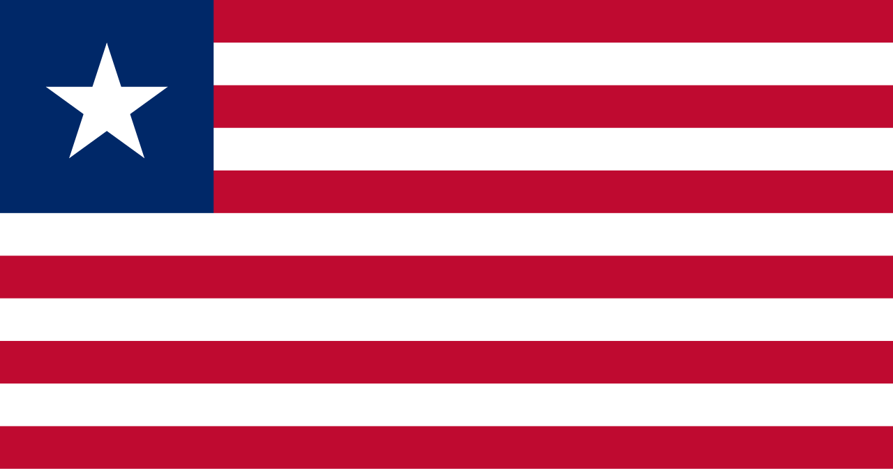

Libéria
 A Libéria, oficialmente República da Libéria, é um país localizado na costa ocidental da África, limitado por Serra Leoa, Guiné e Costa do Marfim, tendo o Oceano Atlântico a sudoeste. Sua capital é Monróvia, a maior cidade e principal centro político e econômico do país. Com uma área de aproximadamente 111 mil km² e uma população de cerca de 5 milhões de habitantes, a Libéria é historicamente única no continente africano, pois foi fundada no século XIX por ex-escravizados libertos dos Estados Unidos, com o apoio da Sociedade Americana de Colonização. Por esse motivo, é frequentemente chamada de “a primeira república africana moderna”, já que declarou sua independência em 1847, tornando-se o primeiro Estado africano republicano contemporâneo. O nome "Libéria" significa “terra dos livres”, refletindo a esperança de liberdade de seus fundadores. Apesar de sua história singular, a Libéria enfrentou sérios desafios ao longo do século XX e início do XXI, incluindo desigualdades sociais entre descendentes dos colonos americo-liberianos e as populações indígenas, além de duas guerras civis devastadoras (1989–1997 e 1999–2003) que resultaram em destruição massiva e centenas de milhares de mortos. Hoje, o país busca reconstruir suas instituições democráticas, fortalecer a economia e superar os traumas do passado. A Libéria é conhecida por sua forte identidade cultural, biodiversidade tropical e pela presença de importantes recursos naturais, como madeira, ferro, ouro e diamantes.
História
A história da Libéria é profundamente ligada ao tráfico transatlântico de escravizados e à luta pela liberdade. No início do século XIX, organizações abolicionistas norte-americanas criaram a Sociedade Americana de Colonização, que incentivou o envio de ex-escravizados libertos dos Estados Unidos para a costa africana. Em 1822, esses primeiros colonos desembarcaram na região que viria a se tornar a Libéria, estabelecendo uma colônia chamada Monróvia, em homenagem ao presidente norte-americano James Monroe, que apoiava o projeto. Em 1847, os colonos declararam a independência da Libéria, elaborando uma constituição inspirada no modelo dos Estados Unidos. O poder político, entretanto, ficou concentrado nas mãos dos americo-liberianos, descendentes dos colonos, que governaram o país por mais de um século, marginalizando as populações indígenas. Durante esse período, a Libéria manteve relativa estabilidade política e atraiu atenção internacional, sendo um dos poucos países africanos independentes no período colonial.
No entanto, tensões sociais e econômicas aumentaram ao longo do século XX, levando a golpes de Estado e, posteriormente, às guerras civis que devastaram o país entre 1989 e 2003. Esses conflitos foram marcados por extrema violência, deslocamentos populacionais e destruição da infraestrutura. A intervenção internacional e a assinatura de acordos de paz em 2003 abriram caminho para a reconstrução nacional. Em 2005, Ellen Johnson Sirleaf foi eleita presidente, tornando-se a primeira mulher a governar um país africano, símbolo de renovação e esperança. Desde então, a Libéria vem tentando fortalecer a democracia e impulsionar sua economia, apesar de desafios como pobreza, corrupção e fragilidade institucional.
Cultura
A cultura da Libéria é um mosaico de influências indígenas africanas e americo-liberianas, resultado de sua história singular. Os americo-liberianos introduziram tradições políticas, arquitetônicas e religiosas inspiradas nos Estados Unidos, enquanto as comunidades indígenas preservaram práticas culturais próprias, como rituais, música e dança. O cristianismo é a religião predominante, mas crenças tradicionais africanas ainda são praticadas em diversas regiões. A música é um elemento essencial da identidade nacional, com ritmos tradicionais mesclados a estilos modernos como o hip-hop e o reggae. A dança, usada tanto em celebrações quanto em ritos espirituais, também ocupa papel de destaque. A gastronomia é rica e variada, baseada em arroz (alimento principal), mandioca, banana-da-terra, carne de cabra, peixe e molhos condimentados. Outro traço cultural importante é a tradição oral, com histórias, provérbios e lendas transmitidas entre gerações, fortalecendo a coesão comunitária.
Apesar das dificuldades sociais e econômicas, a Libéria possui um patrimônio cultural vivo, que reflete a resiliência de seu povo. O artesanato, especialmente trabalhos em madeira, tecidos coloridos e esculturas, também tem grande valor, tanto simbólico quanto econômico. Festividades nacionais, como o Dia da Independência (26 de julho), reúnem manifestações culturais de todo o país.


Clima
O clima da Libéria é tropical úmido, marcado por duas estações principais: a estação chuvosa, de maio a outubro, e a estação seca, de novembro a abril. Durante a estação chuvosa, as chuvas são intensas e podem causar inundações em áreas costeiras, especialmente em Monróvia. Já a estação seca é influenciada pelos ventos harmatãs, que sopram do deserto do Saara, trazendo ar quente e poeira. As temperaturas variam entre 24°C e 30°C ao longo do ano, com alta umidade. Essa combinação de calor e chuvas abundantes cria condições ideais para florestas tropicais densas e para a agricultura.
Biodiversidade
A Libéria é um dos países mais ricos em biodiversidade da África Ocidental, abrigando vastas florestas tropicais úmidas que fazem parte da Bacia da Guiné. Essas florestas são habitat de espécies emblemáticas como chimpanzés, elefantes-da-floresta, pangolins e leopardos, além de centenas de espécies de aves e répteis. O litoral também é rico em ecossistemas marinhos, com manguezais, recifes de corais e áreas de reprodução de tartarugas marinhas.
Apesar dessa riqueza natural, a biodiversidade liberiana enfrenta ameaças significativas, como desmatamento, mineração, caça ilegal e expansão agrícola. O país, no entanto, possui áreas protegidas importantes, como o Parque Nacional Sapo, que abriga algumas das florestas mais preservadas da África Ocidental. Esforços de conservação, apoiados por organizações internacionais, buscam equilibrar desenvolvimento econômico e preservação ambiental.


Cidades
As cidades da Libéria refletem sua diversidade cultural e histórica. A capital, Monróvia, é a maior cidade do país e concentra atividades políticas, econômicas e culturais. Localizada na costa atlântica, possui o principal porto do país e abriga universidades, mercados movimentados e instituições governamentais. Monróvia é também marcada por forte influência americo-liberiana, visível na arquitetura e em tradições urbanas.
Outra cidade importante é Gbarnga, localizada no interior, que desempenhou papel central durante a guerra civil e hoje é um polo de educação e comércio regional. Buchanan, situada no litoral, é conhecida como importante centro portuário para exportação de minério de ferro e madeira. Harper, no sudeste, destaca-se por sua arquitetura histórica e por ser a antiga capital da colônia de Maryland na África. Essas cidades, embora diferentes em tamanho e importância, são fundamentais para a vida social e econômica da Libéria.